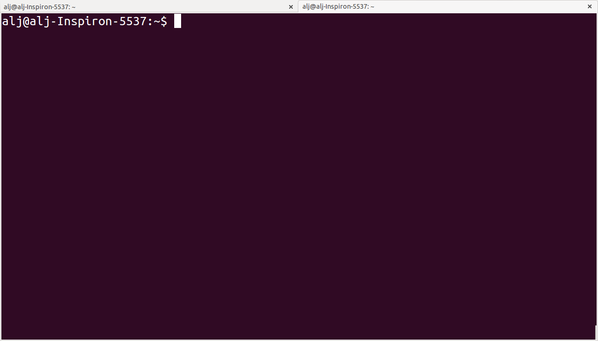

Table of Contents
XX state what the students should have installed
XX simply explain the commands while we need them - put all explained commands in the cheat sheet
navigate through different files, let the students look at them with more, less etc and let them calculate the number of sequences in a fasta file, introduce the grep command, use awk to select a column etc.
Let the commands come one after the other and apply it directly
1 Basic orientation in the command line
Next Generation Sequencing (NGS) data are often big. You simply can't open and work with them in a Word processor or Excel table - even the attempt to open a big fasta file in a text editor can freeze your computer. You might feel uncomfortable and find it cumbersome to navigate through directories and to look at files from the command line but it is a very efficient and powerful tool to work with data. Moreover, many programs to analyze NGS data are based on the command line. This tutorial helps you to familiarize with some of the most basic command line tools and shows you how they allow you to transfer files and how to extract information from big files fast and easily.
The command line appears as a window/terminal similar to:

Figure 1: Command line window
The first line starts with your user name, followed by an @ and then
the name of the computer you are working on. The line ends with a
$ - after this sign you can enter your commands.
The Unix cheat sheet provides an overview of the core commands to
navigate and operate in the Unix command line. Most commands allow you
to adjust their behaviour with a variety of so-called arguments or
flags. Most of the commands, for example, display help information on
their usage if you use them with the --help flag.
For example, if you type ls --help, you'll get an overview of the
common usage of the command ls and of the flags that can change the
behaviour of this command. Before we will work on some sequencing
data, let's have a look at the commands that allow you to change
directories and how to get an overview of files that were saved in
these directories.
more less
Up-arrow to retrieve the last command
history to get an overview of the commands used
cd /; takes to root directory cd; takes back to home directory ls ..; shows directories one hierarchy above tree -C unixtest; show file tree
ls -I abc*; list all files not containing abc
ls *.txt | wc -l; count number of lines
tar -vxf (verbose, extract, file)
wc -l ES24sub.fq | awk '{print $1/4}'; divide the number of the first column (which is 500000) by 4, to get the number of sequences int he fastq file
-M test@test.d when job finishes etc. this info will be emailed to test@test.d
cat denovobash.sh | sed -n 11,12p; print out 11th and 12th lines
mv touch
pwd rm
cat, more and less…
grep cut sed less head tail
2 Data transfer
2.1 Remote connection
2.2 filezilla, rsync
3 Introduce command line programs with flags
4 Navigating through
5 Retrieving basic information from common NGS files
SAM files
how to count bases in fasta file grep …
How to extract specific columns, rows…
how to …
XX play around with sam file flags to select certain subsets of aligned sequences in the first tutorial
- Give students SAm file and let them familiarize with the format by asking questions: what read groups are present etc.?
XX Show better the primary secondary and tertiary analyses - introduce them on extra slides
6 Resources
7 Unix cheat sheet
7.1 File system
| ls | list items in current directory |
| ls -a | list all items, including hidden ones |
| ls -lhcrt | list all items in long, human-readable format and sort in reverse order by modification time |